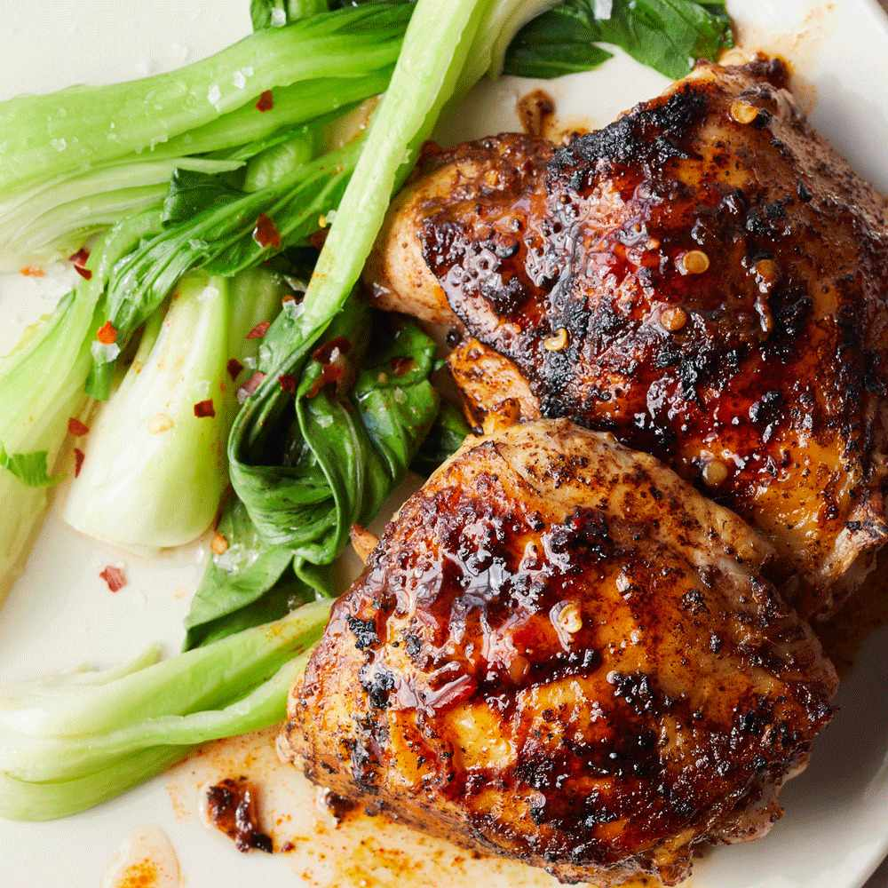

Grilled Five Spice Chicken

Description
Chinese 5-spice powder has a proven track record of awesomeness when combined with smoky, caramelized meats. This grilled five spice chicken recipe is a great example.
Ingredients
- 1 (5 pound) whole chicken, cut in half
- ½ lime, juiced
- 1 tablespoon fish sauce
- 3 cloves garlic, crushed
- 1 tablespoon seasoned rice vinegar
- 1 tablespoon Chinese five-spice powder
- 2 teaspoons hot chile paste (such as sambal oelek)
- 2 teaspoons grated fresh ginger
- 1 teaspoon soy sauce
- ⅓ cup seasoned rice vinegar
- ½ lime, juiced
- 1 teaspoon fish sauce
- 1 teaspoon hot chile paste (such as sambal oelek)
Steps
- Score the skin side of each piece of chicken 2 to 3 times, about 1/8 inch deep.
- Whisk together the the juice of 1/2 lime, 1 tablespoon fish sauce, garlic, 1 tablespoon rice vinegar, Chinese five-spice powder, 2 teaspoons hot chile paste, ginger, and soy sauce in a bowl. Pour into a resealable plastic bag. Add chicken, coat evenly with the marinade, squeeze out excess air, and seal the bag. Marinate in refrigerator for 6 hours.
- Preheat an outdoor grill for medium-high heat, and lightly oil the grate.
- Remove chicken halves from the bag and transfer to a plate or baking sheet lined with paper towels. Pat chicken pieces dry with more paper towels. Reserve marinade mixture in a small bowl.
- Whisk together the 1/3 cup rice vinegar, juice of 1/2 lime, 1 teaspoon fish sauce, and 1 teaspoon hot chile paste in a small bowl. Set aside.
- Grill chicken, skin-side down, on the preheated grill for 2 minutes. Turn each piece, brush with reserved marinade mixture, and move to indirect heat.
- Grill, brushing with glaze and turning ever 10-15 minutes, until well-browned and meat is no longer pink in the center, about 45 minutes total. An instant-read thermometer inserted into the thickest part of the thigh, near the bone, should read 180 degrees F (82 degrees C).
- Drizzle vinegar lime juice mixture over the chicken and serve.